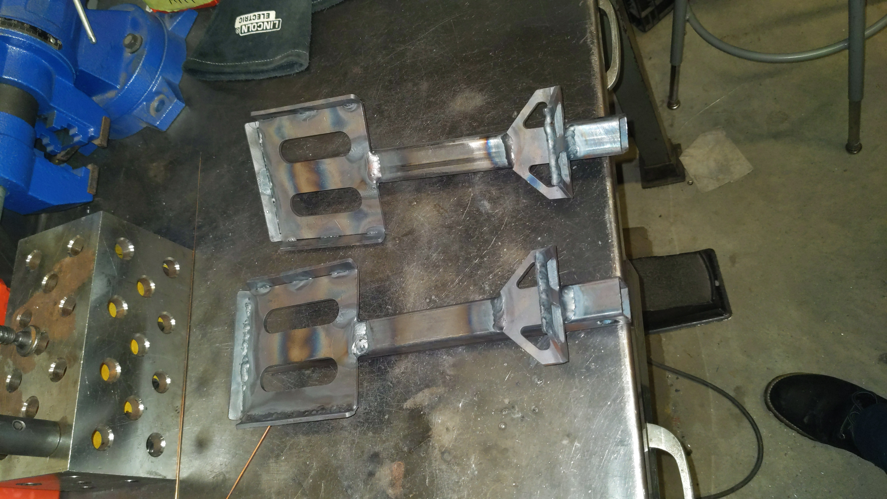
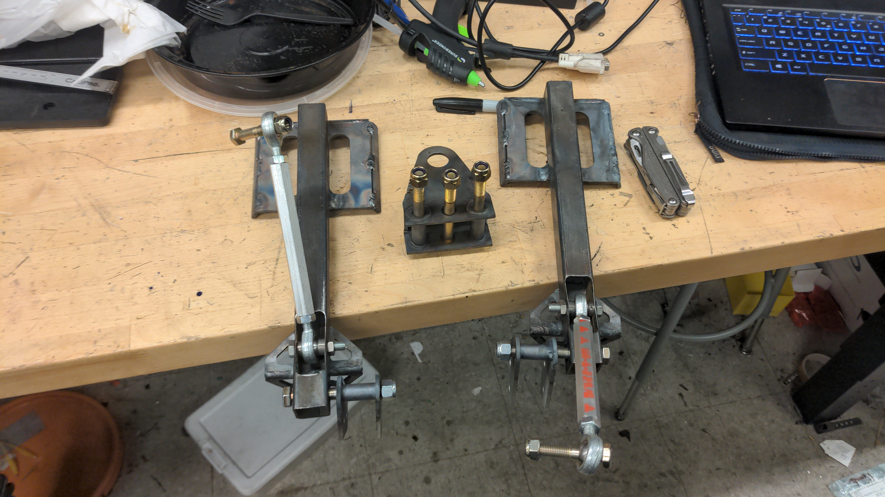
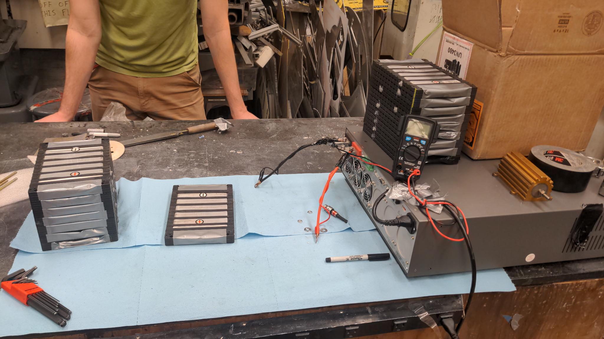
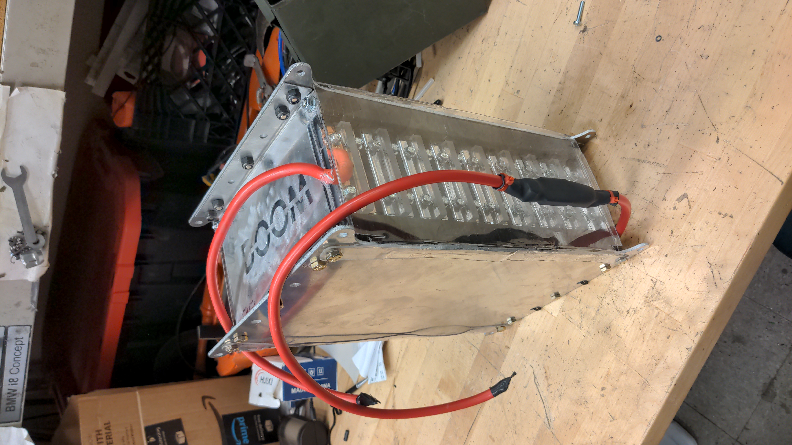
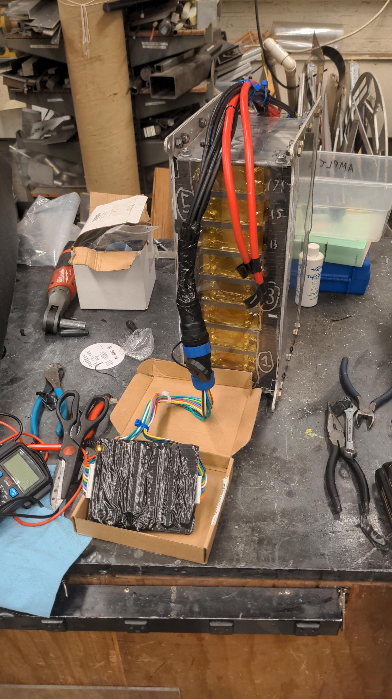
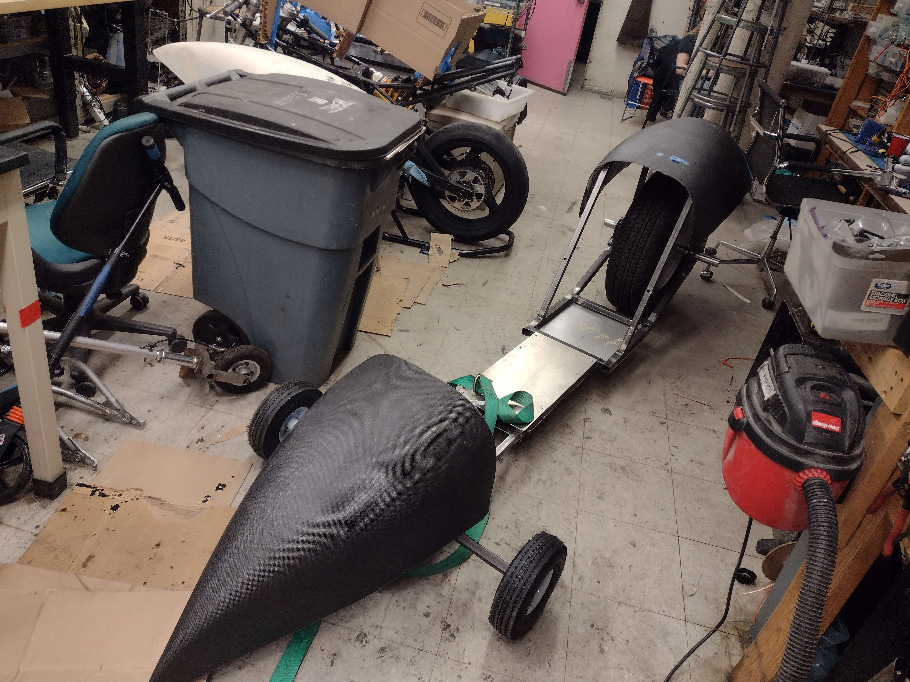

The DOOM SLED
Joint project between me and my dear MITERS friend Jonhenry Poss. Inspired by the original DOOM SLED made by Dane Kouttron. The DOOM SLED (version 2) was designed for icy wastelands, geared for top end speed, and gifted the power of around 9 electrical horses. Steered using the soles of your feet and incorporating a diabolically sized rear tire makes MITERS' most seasonsed electric vehicle riders quiver at the thought of reaching DOOM SLED's theoretical top speed of around 60-70 mph (we are still unsure exactly).
CAD
Trying to settle on the vehicle architecture was fun, and we ultimately settled on a beach luge kind of style.
Steering
The steering was one of the things I designed and fabricated on the DOOM SLED. It is made entirely of steel box tubing and sheet metal. Using the waterjet in building N52, its quite convenient to make 3d structures using sheet metal and a welder. The steering system on the DOOM SLED is special because it has both negative trail and negative rake. This is how skateboard trucks function, and allows the body of the DOOM SLED to roll while taking a turn as well as giving self righting properties at speed. The linkages were made with the mini lathe at MITERS.


The Battery
Another subsystem that I made on the DOOM SLED was the battery. The cells were ordered with MITERS money and was only like $250. We used the SPIM cells from battery hookup to make our 17s 1p pack. The ratings from battery hookup were totally fake though, advterising these cells at 1mOhm each is totally a lie. I tested each cell we bought and rejected the worst cells according to their IR. The average IR per cell was around like 10mOhm. You can see below my testing setup which included a tektronix variable load and a kelvin connection to a multimeter to measure the corresponding voltage drop of each cell at 30A. I chose the 17 cells with the smallest IR to be included in the pack.

The cells were nice because they came with plastic pieces that fit into each other and allowed the entire pack to be bolted together with long studs.

Here you can see the battery with the bus bars and all sense leads installed. The battery uses an external balancing board to balance occasionally, but otherwise only relies a fuse and the kelly motor controller to remain within operating bounds. A voltage indicator is also present on the doomsled for manual checking of the battery state.

The Electronics
The rest of the electronics pretty much consists of a kelly motor controller, a contactor, and some twist throttles for gas and brakes. No precharge necessary, Kelly apparently doesnt really need it according to their application schematics.
Jonhenry did the other stuff like the frame, welding, motor and sprocket mounts, the car tire center hub, and even some aero components that have not yet been mounted.

